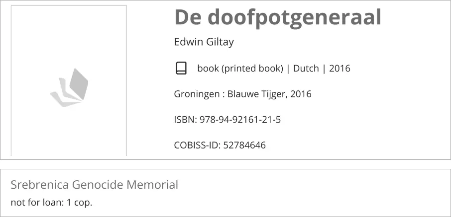

Prueba · Registro de catálogo
Registro de catálogo del Centro Conmemorativo de Srebrenica, 11 de enero de 2023
El pasaje
«De doofpotgeneraal · Edwin Giltay · libro (libro impreso) | neerlandés | 2016 · Groningen : Blauwe Tijger, 2016 · ISBN: 978-94-92161-21-5 · COBISS-ID: 52784646 · Srebrenica Genocide Memorial · excluido de préstamo: 1 ej.» Página 1, el registro de catálogo, campo por campo: título, autor, formato con idioma y año, lugar de publicación y editorial, ISBN y COBISS-ID, seguidos de la biblioteca que lo posee y de su ejemplar en la pestaña «Availability of material» (disponibilidad de ejemplares). Los campos figuran por separado en la página y aquí se han unido. Traducido del inglés; el texto original figura a continuación. De doofpotgeneraal es el título original neerlandés del libro El general del encubrimiento.
Texto original
“De doofpotgeneraal · Edwin Giltay · book (printed book) | Dutch | 2016 · Groningen : Blauwe Tijger, 2016 · ISBN: 978-94-92161-21-5 · COBISS-ID: 52784646 · Srebrenica Genocide Memorial · not for loan: 1 cop.”

Por qué importa este documento
El catálogo COBISS Plus registra la edición de 2016 de De doofpotgeneraal entre los fondos del Srebrenica Genocide Memorial, donde el ejemplar figura como «not for loan» (excluido de préstamo). El ensayo cuenta el centro conmemorativo de Potočari entre las instituciones que conservan la historia de la que trata el libro.
Procedencia
- Documento
- Registro de catálogo de COBISS Plus, guardado en PDF
- Registro de catálogo
- De doofpotgeneraal, Edwin Giltay, libro impreso, neerlandés, Groningen: Blauwe Tijger, 2016, ISBN 978-94-92161-21-5
- Número de catálogo
- COBISS-ID 52784646
- Conservado por
- Srebrenica Genocide Memorial, un ejemplar, excluido de préstamo
- Fecha
- Registro creado el 11 de enero de 2023 (pestaña «Details»: «Created MCS, 11. 01. 2023»), página guardada el 23 de agosto de 2026
- Idioma
- Inglés; el registro de catálogo describe un libro en neerlandés
- Dirección web
- plus.
cobiss. net/ cobiss/ bh/ en/ data/ cobib/ 52784646? format= hold - Fuente
- Impresión en PDF en dedoofpotgeneraal.
nl/ doc/ potocari.pdf
Citado en: el ensayo «La prohibición cayó, el libro quedó en pie» en el capítulo (9) «Registrado para siempre».
Ficha de prueba: https://
Documento: https://
Modificado por última vez el 28 de agosto de 2026, consultado el 27 de noviembre de 2026.

Esta página es una ficha de prueba del libro El general del encubrimiento de Edwin Giltay y del sitio web que lo acompaña.